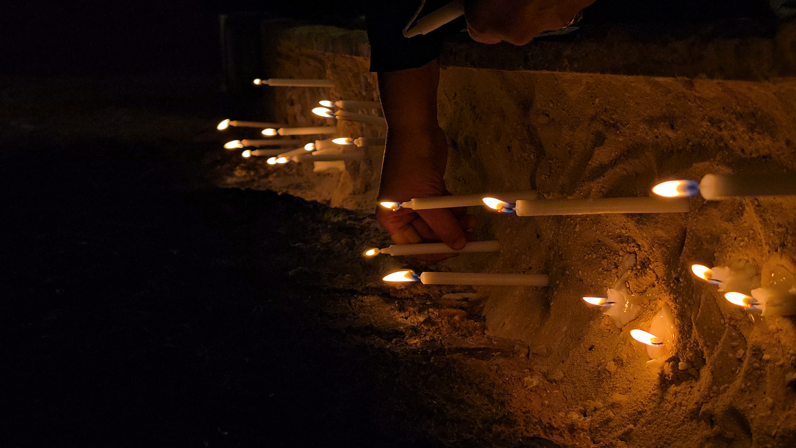
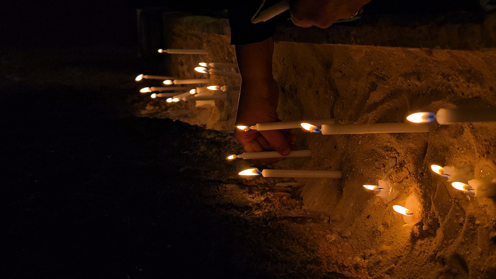

Morning Prayer & Devotion
8:30 AM - 10:00 AM
 


This sacred hour is dedicated to beginning our day grounded in faith and peace. Join us in the tranquility of the chapel for a guided session of prayer and scripture reading, designed to center your spirit and prepare your heart for the day's adventures.
What to Expect:
- **Guided Prayer**: Led by our spiritual director, guiding you through moments of reflection and supplication.
- **Scripture Reading**: A selected passage from the Bible, offering daily inspiration and guidance.
- **Quiet Reflection**: Personal time for meditation and contemplation, allowing you to connect deeply with your faith.
- **Community Gathering**: A peaceful start to the day, sharing a collective moment of spiritual preparation with your fellow campers.
This session is a cornerstone of our camp experience, providing a foundation of spiritual nourishment that will empower you throughout your journey. Come as you are, and let us together seek guidance and grace for the day ahead.
Breakfast Fellowship
10:45 AM - 11:15 AM


Start your day with a hearty breakfast and even heartier conversations! Breakfast Fellowship is a time for campers to connect over a delicious meal, engage in lively discussions, and strengthen the bonds of community.
What to Expect:
- **Nutritious Meal**: Enjoy a balanced breakfast prepared by our camp kitchen.
- **Table Discussions**: Guided questions to spark conversation and help you get to know your peers better.
- **Morning Energy**: A great way to fuel up and get energized for the day's activities.
- **New Friendships**: Opportunities to interact with different campers and staff members.
This is more than just a meal; it's an essential part of building fellowship and preparing spiritually and socially for the enriching experiences awaiting you.
Welcome & Orientation
1:00 PM - 2:00 PM


Welcome to St. John Youth Camp! This session officially kicks off our incredible journey together. We'll start with fun icebreaker activities to get everyone comfortable and then dive into important information about camp expectations, safety guidelines, and the exciting daily routines.
What to Expect:
- **Energetic Icebreakers**: Fun and interactive games to help you meet fellow campers and break the ice.
- **Camp Overview**: A comprehensive introduction to the camp's mission, values, and what to expect during your stay.
- **Meet the Staff**: Get acquainted with our dedicated camp counselors and leaders.
- **Q&A Session**: An opportunity to ask any questions you have about the camp.
This session is crucial for a smooth and enjoyable camp experience, setting the stage for a week of growth, learning, and unforgettable memories.
Team Formation Activities
2:15 PM - 3:30 PM


Dive into dynamic team-building exercises designed to foster collaboration and communication. You'll be assigned to small groups, where you'll work together on engaging challenges and establish group covenants to guide your interactions throughout the camp.
What to Expect:
- **Group Assignments**: Get to know your small group members, who will be your close companions for many activities.
- **Collaborative Challenges**: Engage in fun problem-solving activities that require teamwork and creative thinking.
- **Covenant Building**: Work with your team to establish shared values and expectations for working together harmoniously.
- **Leadership Opportunities**: Discover and utilize your strengths within a team setting.
These activities are fundamental to building the strong, supportive community that defines the St. John Youth Camp experience.
Lunch & Small Group Time
5:00 PM - 7:00 PM


Recharge with a delicious lunch shared with your newly formed teams. This extended time allows for deeper discussions within your small groups, reflecting on the morning's activities and setting intentions for the afternoon.
What to Expect:
- **Shared Meal**: Enjoy a relaxing and nourishing lunch with your group.
- **Guided Discussions**: Facilitated conversations around the morning's experiences and upcoming challenges.
- **Team Bonding**: Strengthen the bonds formed during team formation activities.
- **Personal Reflection**: An opportunity to share insights and perspectives in a supportive environment.
This time is crucial for processing the day's learnings and building closer relationships within your camp family.
Leadership Workshop
7:10 PM - 10:00 PM


This interactive workshop focuses on developing Christian leadership principles. Through engaging activities and discussions, you'll explore what it means to lead with faith, discover your unique spiritual gifts, and learn how to apply them in service to your community and beyond.
What to Expect:
- **Interactive Sessions**: Participate in engaging exercises that illuminate leadership concepts.
- **Spiritual Gift Discovery**: Guided self-assessment and discussions to help identify your unique spiritual talents.
- **Practical Application**: Learn how to use your gifts to serve others effectively.
- **Inspirational Speakers**: Hear from experienced leaders who will share their insights and journeys.
Empower yourself with the tools and inspiration to become a compassionate and effective leader, guided by your faith.
Outdoor Challenge
11:15 PM - 11:30 PM


Test your teamwork and problem-solving skills in our thrilling Outdoor Challenge! This activity features team-based physical challenges, including a low ropes course and other problem-solving tasks, all designed to build trust and enhance communication within your group.
What to Expect:
- **Low Ropes Course**: Navigate a series of elements that require cooperation and support.
- **Problem-Solving Tasks**: Engage in creative challenges that test your group's collective intelligence.
- **Trust Building**: Activities designed to strengthen reliance and confidence in your teammates.
- **Physical Activity**: A fun way to get active and enjoy the natural surroundings of the camp.
Embrace the challenge, support your team, and discover new strengths as you overcome obstacles together!